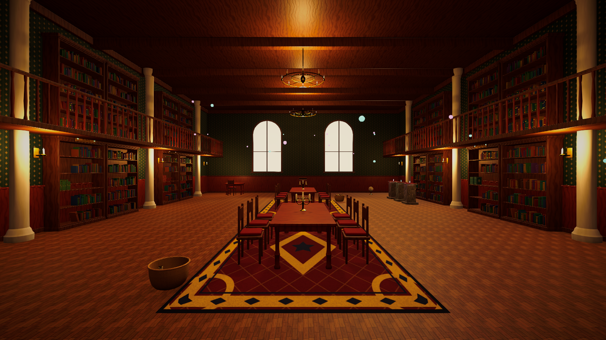

Tidy Up Framework
Tidy Up + Sorting + Organizing + Placement + Satisfying Interaction Framework for Unity 6 and the Universal Render Pipeline.

1. Introduction
What it is
The Tidy Up Framework is a reusable toolkit for games in which the player finds, picks up, sorts, places, stacks and cleans objects until a messy space becomes organised. It is not a single game: it is the set of systems underneath one, separated from content so you can replace every model, room and rule with your own.
Why it exists
Organising games look simple but repeat the same hard problems: reliable aiming at small objects, placement that always looks neat, rules such as "red books go here" or "volumes in order", objectives, scoring, hints, input on three device families, saving and a polished UI. The framework solves those once, in a data-driven way, so a new level is mostly configuration.
What you can build
Library & museum sorting
Shelves ordered alphabetically or by volume, curated display cases.
Store & collectible shelves
Hundreds of small items sorted by type, colour and quantity.
Warehouse & workshop
Colour-coded bins, size-based pallets, tool walls.
Cosy room & unpacking
Cleaning stains, disposing clutter, placing items on surfaces.
Kitchen, garage, office
Any mix of containers, drawers, stacks and free placement areas.
Fantasy inventories
Potions, crystals and scrolls with tag-based rules.
Feature overview
| Area | Included |
|---|---|
| Interaction | Hover outline, pick up, hold, carry a stack of several objects with smart selection, rotate, inspect, place with ghost preview, drop, toss, controlled or physics-based handling |
| Data | Object, category, tag, rule, objective, level, score, combo, hint, feedback, tutorial, audio cue and input prompt assets |
| Placement | Snap slots, slot grids, packed shelf rows, containers (grid, pile, hidden/disposal), free placement zones, stack points |
| Sorting | Category, tag, colour, size, shape, exact object, numeric range, alphabetical range, composite rules; ordering by name, sequence, priority, size, weight; grouping by identical object, category or tag |
| Progression | Objectives, optional objectives, time limits, stars, unlocks, level select, best score and time, rewards, mid-level save and continue |
| Feel | Combo multiplier and tiers, floating score, punch animations, particles, camera kick, sound cues, before/after transformation |
| Input | Input System action asset, keyboard & mouse, gamepad, touch joystick and gestures, device-aware prompts |
| UI | Main menu, level select, settings (graphics, audio, gameplay, input), controls, credits, HUD, pause, results |
| Tools | GameObject creation menu, interactive object setup, ID generator, Level Validator, custom inspectors, welcome window |
2. Installation
- Requirements. Unity 6000.0 or newer with the Universal Render Pipeline (17.x), the Input System package (1.11+) and uGUI 2.0 (TextMeshPro is part of it). The Player Settings option Active Input Handling must include the Input System.
- Import. Import the package. All files live under
Assets/TidyUpFramework. - TextMeshPro resources. If Unity prompts for TMP Essential Resources, accept. They provide the default font used by the UI.
- Build scenes. Open File > Build Profiles and make sure the scenes in
Demo/Scenesare listed, withTidyUp_MainMenufirst. The demo pipeline does this automatically. - Play. Open
Demo/Scenes/TidyUp_MainMenuand press Play.
3. Quick Start
This is the shortest path from an empty scene to a playable sorting level. The full illustrated version is in Creating Your First Level.
- Create a new scene and add a floor.
- Choose GameObject > Tidy Up Framework > Complete Level Setup. This adds the player, the level systems and the HUD.
- Create a category: Create > Tidy Up Framework > Category, for example
Books. - Create an object definition: Create > Tidy Up Framework > Object Definition and set its category to
Books. - Drop a few book meshes in the scene, select them and run Tools > Tidy Up Framework > Make Selected Objects Interactive. Assign the definition on the Tidy Object component.
- Add a shelf: GameObject > Tidy Up Framework > Placement > Shelf Row (Packed). In Acceptance > Categories add
Books. - Create a level: Create > Tidy Up Framework > Level Definition, add a Place Objects objective and assign the level to the Level Manager.
- Run Tools > Tidy Up Framework > Level Validator, fix anything it reports, then press Play.
4. Project Structure
Assets/TidyUpFramework/
Runtime/ Framework code (TidyUpFramework.Runtime assembly)
Core/ Services, tweening, pooling, control locks
Objects/ Object, category, tag and physics definitions
Rules/ Sorting rules, match filters, ordering
Placement/ Slots, rows, containers, free zones, stacks
Interaction/ Interactor, highlight, placement preview
Objectives/ Objective definitions and trackers
Levels/ Level definition, catalog, manager, scene loader
Scoring/ Score and combo
Hints/ Hint definition, system and indicator
Cleaning/ Cleanable surfaces, tools, cleaning interactor
Transformation/ Before/after controller and reactors
Feedback/ Feedback definition, player, camera punch
Player/ First person controller, cursor
Input/ Input reader, prompts, action names
UI/ HUD views, screens, menus, mobile controls
Audio/ Audio cues and service
Save/ Save service, storage back-ends, data
Settings/ Framework settings, bootstrap, settings service
Tutorial/ Tutorial definition and runner
Editor/ Inspectors, menus, Level Validator (TidyUpFramework.Editor)
Shaders/ Outline and ghost preview shaders
Prefabs/ Player, Level Systems, HUD, Main Menu
Resources/ TidyUpFrameworkSettings (loaded at start-up)
Settings/ Input actions and prompt definitions
UI/Sprites/ Interface sprites
Demo/ Demo content only (scripts, data, art, audio, scenes)
Documentation/ This documentationDemo/ references demo content. You can delete the Demo folder and the framework still compiles and works.